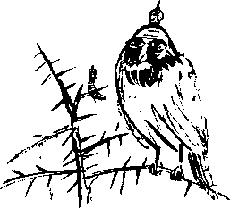

XLIX.
Sultan İkinci Berke ateşler içinde yanıyor, kan çanağı olmuş gözlerini açmış, “Osman Hulûsi, Suat Ferid... Hami... Mehlika... Hwace... Anet” diye sayıklıyordu. Hwace yel yepelek, yelken kürek, duyunca koşmuş gelmiş, yaptığı bir marifetmiş gibi “sultanım gam çekmesin yanında ben varım artık” diye zırvalıyordu. Berke’nin bilmediği ülkeler, zamanlar, kişiler ve yerler hakkında sayıklaması, Ulus ve Belçika’dan bahsetmesi garipti. Hekimbaşı Moşe Efendi’nin ihtimamı ile zavallı tam iki kez dönmüştü ecelin eşiğinden. Hwace de ikbal günlerinin sona ereceği kaygısı ile Duvduvani’yi açmış,
“Arslanım arslan gibi olsun, arslanıma yeni bir gün doğsun, arslanım çakalları boğsun” diye bir zavallı dua tutturmuştu. Hami, sultan belki eğlenir diye eline geçirdiği bir tahta kepçe ile kendisini dövüyor, makamla şu saçma sapan tekerlemeyi söylüyordu,
"Hami sana kurban olsun, Hami’nin çanağına kum dolsun, Hami’nin babası ölsün, Hami’nin babaannesi kocaya varsın.”
Berke pek perişan, sağa sola deli bakışlar gönderiyor, hayali düşmanlara tekmeler savuruyor, aniden yerinden doğrularak,
“Ben turp gibiyim, hasta değilim” diyordu.
Moşe, parmağı şakağına dayalı, Hwace’ye gizli bir işaret yaparak, “olmuş bu” dedi. Berke bu işareti görerek,
“Bana olmuş diyenin kendisi ölmüş” dedi.
Korkuya kapılan Moşe telaşla odadan kaçtı.
Berke boğuk hırıltılarla,
“Ben de gitmek istiyorum Belçika’ya” diye haykırdı.
Hwace,
“Sultanım, Belçika dedikleri icat olur olmaz farz olsun gitmek vallahi” dedi. Elif gibi doğru bir adam olmasına rağmen, durduk yerde boşuna yemin etmek zorunda kalınca kızmıştı.
Bin türlü ihtimama rağmen Berke’nin ateşi düşmüyordu, sanki görünmez bir çengele takılmış kalmıştı, bedeni kavruluyordu. Vücudunun harareti müteferrikaların güneşi gibi kızıl sakallarına vuran sultanın yıllardır taşıdığı küçük kurtçuklar için bu korkunç ve yeni bir işkenceydi. Oturup meclis-i meşverette uzun uzun tartıştıktan sonra başka bir eve karar kıldılar. Bu tartışmaların hepsini duyan Sultan kendi kendine homurdandı,
“Aman defolup çıkan bunlar olsun.” Lâkin, kovduğu kurtçuklardan bir kurtçuk, kızıl kafalı Suat Ferid, sanki kendisiydi. Yani hemen hemen kendisi idi. Pek tuhaftır başka bir bedende kendisine bakmak pek...
Kurtçuk olmak hasebiyle ufak tefek vücut farklılıklarına sahip bu yaratık, Berke’nin kulağına tırmanarak, nereye gideceklerini haber verdi fısıltıyla. Ayrıca,
“Berke ben senin can kurdunum, beni de mi kovuyorsun” diye, sultanın taa beyninin derinliklerine dehşetli bir mesaj ulaştırdı, sesi incecikti. Can kurdu kıvransa da, sultan alayla –ölüm döşeğindeki sultanlar pek alaycı olur– “sesin kız gibi” dedi. Suat Ferid bavulunu toplamakla meşguldü. Bu son işini yaparken bile rahat yoktu. Şimdiye kadar kendi üzerine düşeni yapmış, Berke’yi uyarmış, fakat beriki gözünü daha açmadan kapamak istemişti. Sultan olmak tuhaf bir şeydi. Müthiş bir yalnızlık sürecinde anasının, babasının, hareminin, çocuklarının, varsa sevgilisinin önemi yoktu. İşte yeni bir sayıklama sayfası açmış, “Mülküm, toprağım, arazim, reayam, vergilerim, sarayım, kullarım” diyordu canı boğazdaki sefil adam. Oysa, can evine dönmek üzereydi.
Hami, kendi elleriyle indirdiği kepçe darbelerinden kafası epeyce sersem, dar pencereden Ayasofya’ya bakarken, kanı birden ısınıp doludizgin beynine koştu bir küheylanmışcasına. Yeşil keskin gözleri, İstanbul’u kanatlarının altına alan sütbeyaz bir silueti üçüncü şerefede hemen seçmiş, tanımıştı. Mırıldandı,
“A beyim,” dedi, “Osman Hulûsi, hele senin zavallı Suat Ferid’in Hami’siz olur mu?” Dogma büyüme yalancı oğlu yalancı olduğu için yavaşça ekledi,
“Acaba sizleri kurup Osman Ferdi’nin romanına koyan kim?”
Nurlu ufuklara derin bir iştiyakla baktı, baktı. Sonra, diğerlerinin dalgınlığından yararlanıp bir ak güvercin donuna bürünmeye niyet ederek, silkinip saldırdı düşen karlara. Mehlika Sultan, ağabeyinin ecel recaileri ile pençeleştiği haberini yeni almış, ölüm odasına girerken son anda, berikini uçarken sezebilmişti. Cesur kız, “bu aptalın yaptığını ben de yaparım” düşüncesiyle yeşil gözlü kapkara bir karga oldu. Saray olmasına rağmen buz gibi ve nemli olan bu sefil yerde daha fazla kalmayı bir lüzumsuz iş saydı. Son anda pencerenin pervazını aşmaya çalışan, eli çıkınlı, kırmızı kafalı bir kurtçuk gördü. Bir küçük, tombul kızıl kafalı kurtçuk. “Yolda yerim” düşüncesiyle –dişi sultanlar pek tedbirli olur– ve olağan bir öfke ile aldı. Payitahtı karlar kaplamıştı, pek güzeldi.
Berke yarı beline kadar doğrulmuş,
“Sen beni bilmezsin, ben adamı ne yaparım, kimsin sen yahu” diyordu. Kiminle konuştuğu muğlak,
“Alelâde bir padişah belleme beni” dedi titreyerek.
“Benim bir edna kulum seni o gün ikiye biçti, düşün bir ” diye ekledi. Hwace’nin başı sürekli Duvduvani’nin üzerinde, yeni uydurukçu şahikalara ulaşıyordu.
“Benim arslanımın yelesi çoktur, benim kaplanımın ölesi yoktur, benim sırtlanımın karnı toktur, ölüme ne hacet var benim olduğum yerde" diyordu
Hwace Allah için pek cesurdu “Sultanım sen aslında Utarid gibi bir şeysin, ölümü seviyorsun çok” dedi. Berke, bu acımasız benzetme yapıldı diye pek telaşlanmıştı. Hayır, kendisi asla bir Utarid değildi. Acıdan kıvrana kıvrana bir çıkış aradı umutsuzca.
“Düşünmekten, aslını faslını araştırmaktan başka çare yok” diye bir çıkarım yaptı yarım yamalak. O hengâmede bile “Hwacem bunu niye söyler” diye düşündü. Hayatı boyunca aramıştı gerçeği, yalnızca gerçeği. Aklına mağrur olduğu için içinden “Şimdi görürüm, her ne ise pekâlâ anlarım” diye söylendi. Aklının hızına uyamayan vücudu ise şimdi katılaşmaya başlamıştı. İçinden atıp tutmuş, böyle demişti iftirakların efendisi. Durumun vahametini takdir eden şuur-u teslis, esefle söylendi,
“Şu bizim halimiz harap.”
Şuurun olmadığı bedende akıl var mıydı bilemedi. Nutfe, “böyle oluyor demek ki sultanların düşkünü” diye düşündü. Berke son bir gayretle,
“Ne herze söylersin” diye çıkıştı. Her an binlerine külâh giydirme derdindeki Hwace’nin cevabı çoktan hazırdı. Kurulmuş bir tetik gibi anında düşerdi Hwace. Ya da mütecessis ve açgözlü bir tilki gibi, kurulmuş bir tuzağa gelir, langadanak düşerdi. Tehditkâr parmağı dudağında, güya cevap verdi,
“Azrail’in kalbi genç kız kalbi gibidir!”
Berke,
“Hwace Allah lillah aşkına zırvalamayı bırak” dedi. Hwace de,
“Sen de titremeyi keser misin" dedi alayla. Sonra esrarlı bir havada,
“Yok, buraları senin bilmen imkânsız, bunu sen bilemezsin” dedi. Azrail ise Hwace’nin kurduğundan da korkunçtu. Yeraltından henüz kopmuş canlı bir zelzele heybet ve suretinde kendini Berke’ye göstererek sordu,
“Sen o vakitsiz öldürdüklerinden farklı mısın ki padişah?"
“Muhakkak öyleyim, Allah’ın yeryüzündeki gölgesiyim" dedi hafif gururla. Muhatabı alaylı,
“Eyvah biz sonra n’apanz” dedi. Berke’nin gözleri pencereden gördüğü karlı buzlu damdan aşağılara kaydı. Kendisi de mavi buzdan bir uçuruma düşer gibi olmuştu. Yatak çarşaflarına tutunarak,
“Nasıl bir his, ne gibi yani?” dedi.
Hwace tüm bunlar olurken Duvduvani’ye bir sayfa daha ekledi, has parşömenden. Acaba bunu niye yapıp duruyordu?
“Ey cümle âlemin eteğine sığındığı padişah, ey Asya-ı Vustâ’dan kopup gelen şanlı Hakan" diye ünledi. “Sende temerküz etmiş cümle fazilet, sende neşv ü nemâ bulur her türlü erdem” diye ekledi. “Ne gam çekersin, Hwace gibi varisin var, takma kafana” dedi.
Hwace taktik değiştirmiş, Azrail bir an önce Berke’yi alsın, taht kendisinin olsun, hanedan kendi adıyla anılsın istiyordu. Zayıf elleriyle ölüm meleğine bir işaret yaparak,
“Melek bey oğlum niye şunun göğsüne bastırmıyorsun muhkemce” dedi.
Hwace’den daima daha kurnaz olan Berke’nin âteşîn zihninde bir şahane yıldırım çaktı. Yahu ne muhteşem bir fikirdi, ne güzel! Sesini iyice güçsüzleştirerek,
“Hwacem ben bu âlemden gider oldum bunu böylece bil” dedi. Azrail bile bir an bu dolaba takıldı. Berke devam ederek,
“Hwacem hem soylu hem huylu hem de ulu bir tarihçi âdemdir” dedi. Ve ekledi,
“Mülkümüzü ona bırakıyorum, kendi ciğerimin parçasından daha yeğ."
Hwace dehşetli mutlu olmuştu. Devlet kuşu adamın kafasına bir kez konardı. Berke acıklı acıklı inleyerek,
“Hwacem kabul eylen, geçmiş kusurumuza bakman, intikam alman” dedi.
Hwace alınmış gibi yaptı. Berke herhalde aklını kaybetmiş olacaktı, pek hoş! Hadisenin gülünçlüğünü değme muhayyil tasvir edemezdi. Hwace kurnazdı ama pek akıllı değildi işte. Berke iyice inledi,
“Hwacem taht yaşlı fakat dinç sevgilisinin yolunu kollar."
Hwace bu imgelem karşısında utanmış gibi yaparak önüne çapkınca baktı.
“Hwacem bu mülkün sultam sensin, herkes senin önünde diz çöker olsun!”
Ve şitahların en ağababası havaya kalkarken Berke yalancıktan yatağına çöktü gerisin geri. Ellerini havaya kaldırmış, dua ediyordu,
“Hwacem hayatı doyasınca yaşasın.”
Azrail kendi kendine düşündü, “bunlar benimle kafa buluyor.”
Berke, “Hwacem atlar ile hareme iyi bak, hâzinemi bir an önce tüketmeye çalış” dedi. Beklenen soru, cansız bir “var mısın” şeklinde geldi. Hwace, beriki fikir değiştirmesin diye süratle atladı.
“Varım tabii evlat, başka vasiyetin var mı” diye sordu, şefkatle, rikkatle. Berke mecalsiz mecalsiz cevap verdi usulca.
“İşlerini artık kocaman Tanrım onara!”
Hwace o dakika baştan ayağa, doğma büyüme bir sultan kesildi. Bu dünyadan giderken götürdüğü en son imgelem ise alnına konan korlanmış bir öpücüktü, Azrail’den armağan. Hwace’nin ihtilale uğramış zihni güç bela “nedir bu” diye düşündü. Teslis de bu muhtell ve dahi muhterik zihne destek çıktı, “ne hakikaten bu?”
Herhalde bir şey demekti, bilemiyorlardı valla... Azrail denen gariban da nihayet bir emir kuluydu, ona “git İstanbul’da sultanın canını al” denmişti! Emrin niteliği üzerine canını sıkmadı Azrail hiç. Meçhûl Muhayyil, mütenevvi Osmanlar, Berke veya Suat fark etmezdi. Yeter ki iş olsun, gerekirse Kafdağı’na giderdi. Öyle olağan bir durumdu yani. Berke iyice sağalmıştı, on, yok yok yüz adam gücündeydi. Böyle Azrail başım üstüne, isterse her yıl gelsin valla. Kendini çok daha güçlü hissetti. Muntazırdı, müheyyaydı, beklerdi kıyamete dek.